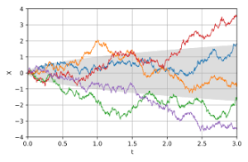
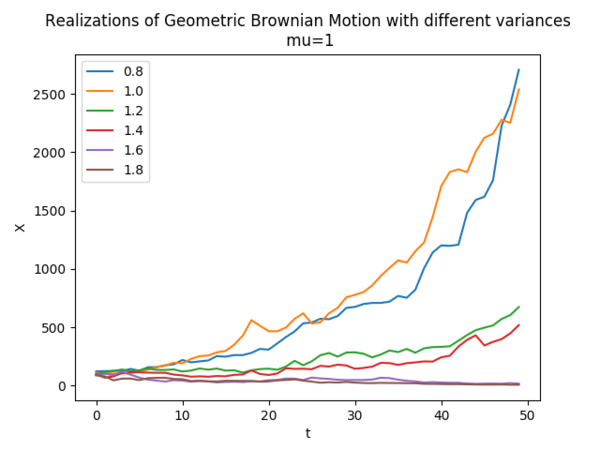
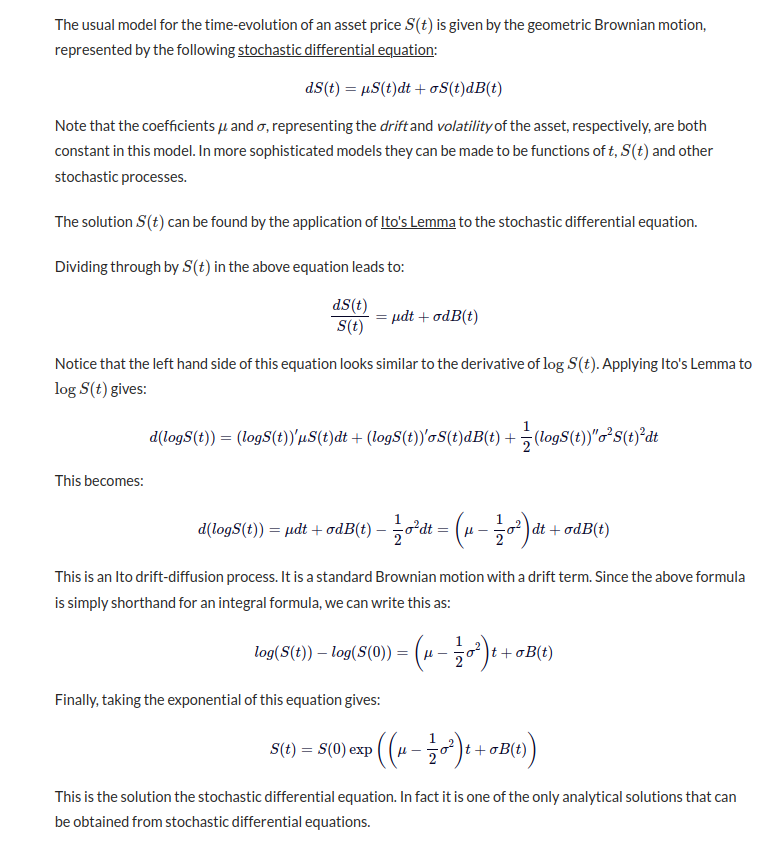

The Wiener Process and the Geometric Brownian Motion
Wiener Process
The Wiener process, also known as Brownian motion, is a mathematical model used in various fields, including finance and physics. It is a continuous-time stochastic process with stationary independent increments.
The Wiener process is often represented by the symbol \(W(t)\), where \(t\) is time. Its key properties include:
- \(W(0) = 0\) (it starts at the origin)
- Stationary increments
- Normally distributed increments
Equations
Wiener Process:
The Wiener process is often represented as:
\[ dW(t) = \mu dt + \sigma dZ(t) \]
where:
- \(dW(t)\) is the Wiener process increment at time \(t\)
- \(\mu\) is the drift, representing the average rate of change per unit time
- \(\sigma\) is the volatility, representing the standard deviation of the increment
- \(dZ(t)\) is a standard Wiener process increment (usually \(dZ(t) \sim \mathcal{N}(0, dt)\))

Geometric Brownian Motion:
The Geometric Brownian Motion is described by the equation:
\[ dS(t) = \mu S(t) dt + \sigma S(t) dW(t) \]
where:
- \(S(t)\) is the stock price at time \(t\)
- \(\mu\) is the drift, representing the average rate of return per unit time
- \(\sigma\) is the volatility, representing the standard deviation of the returns
- \(dW(t)\) is the Wiener process increment at time \(t\)

Analytical solution of Geometric Brownian Motion Model

Simulations
Some simulations of Brownian motion are implemented in the Homework7.
Applications
The Wiener process and Geometric Brownian Motion find applications in various fields:
- Finance: Modeling stock prices, option pricing (Black-Scholes model).
- Physics: Diffusion processes, particle motion.
- Economics: Modeling random economic variables.
- Biology: Modeling genetic drift, population dynamics.
These processes provide a stochastic framework for understanding and modeling random phenomena.